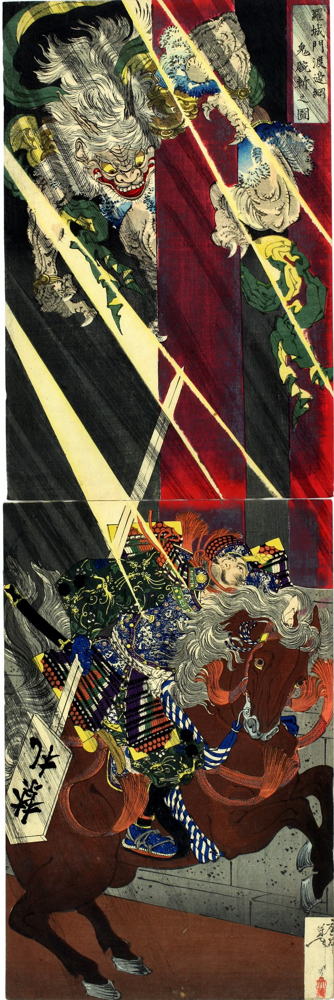

羅城門で睨み合う渡辺綱と鬼。鬼は柱にしがみ付いて、渡辺綱を見下ろしている。頭には2本の角、手足には鋭い爪が生え、耳まで裂けた口からは牙が覗いている。緑色の肩衣をまとっている。
著作者：月岡芳年／出典：親書誌：U426_nichibunken_0090：羅城門渡邉綱鬼腕斬之圖；ラジョウモンワタナベノツナオニウデキリノズ／日付：2005／資源識別子：U426_nichibunken_0090_0001_0000
Copyright (c)2010- International Research Center for Japanese Studies, Kyoto, Japan. All rights reserved.